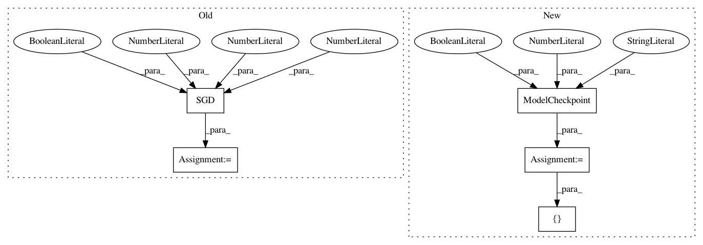

ff68020f31663a0c0023a47dc347531f1f4250af,ann_architectures/cifar10/alexnet.py,,,#,24
Before Change
model.add(Dense(10))
model.add(Activation("softmax"))
sgd = SGD(lr=0.0001, decay=1e-6, momentum=0.9, nesterov=True)
model.compile(loss="categorical_crossentropy", optimizer=sgd,
metrics=["accuracy"])
// Whether to apply global contrast normalization and ZCA whitening
After Change
testflow = testgen.flow(X_test, Y_test, batch_size=batch_size)
checkpointer = ModelCheckpoint(filepath="alexnet2.{epoch:02d}-{val_acc:.2f}.h5",
verbose=1, save_best_only=True)
// Fit the model on the batches generated by datagen.flow()
history = model.fit_generator(trainflow, nb_epoch=nb_epoch,
samples_per_epoch=X_train.shape[0],
validation_data=testflow,
nb_val_samples=len(X_test),
callbacks=[checkpointer])
plot_history(history)
score = model.evaluate_generator(testflow, val_samples=len(X_test))
In pattern: SUPERPATTERN
Frequency: 3
Non-data size: 5
Instances
Project Name: NeuromorphicProcessorProject/snn_toolbox
Commit Name: ff68020f31663a0c0023a47dc347531f1f4250af
Time: 2016-09-07
Author: bodo.rueckauer@gmail.com
File Name: ann_architectures/cifar10/alexnet.py
Class Name:
Method Name:
Project Name: NeuromorphicProcessorProject/snn_toolbox
Commit Name: 64ff88344402771c2735dbcacf7010acfeb55b0a
Time: 2016-10-09
Author: bodo.rueckauer@gmail.com
File Name: ann_architectures/cifar10/noise.py
Class Name:
Method Name:
Project Name: NeuromorphicProcessorProject/snn_toolbox
Commit Name: ff68020f31663a0c0023a47dc347531f1f4250af
Time: 2016-09-07
Author: bodo.rueckauer@gmail.com
File Name: ann_architectures/cifar10/nin.py
Class Name:
Method Name: